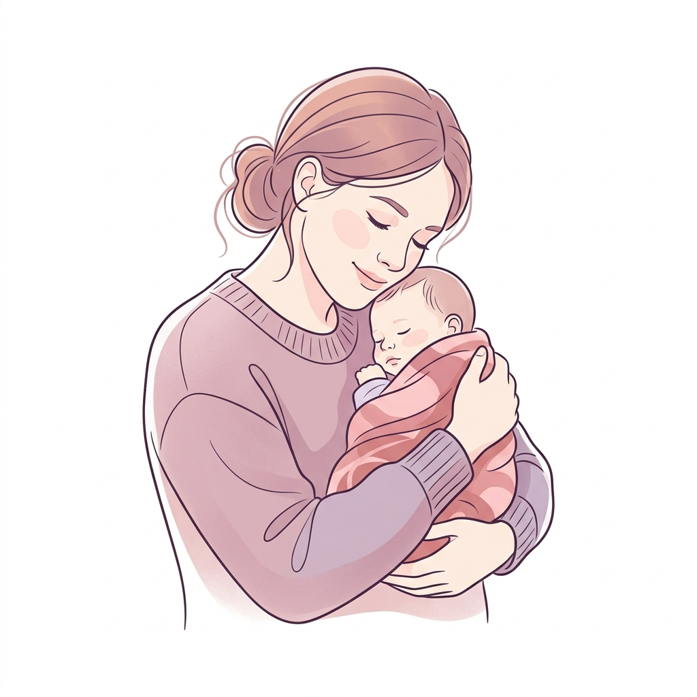
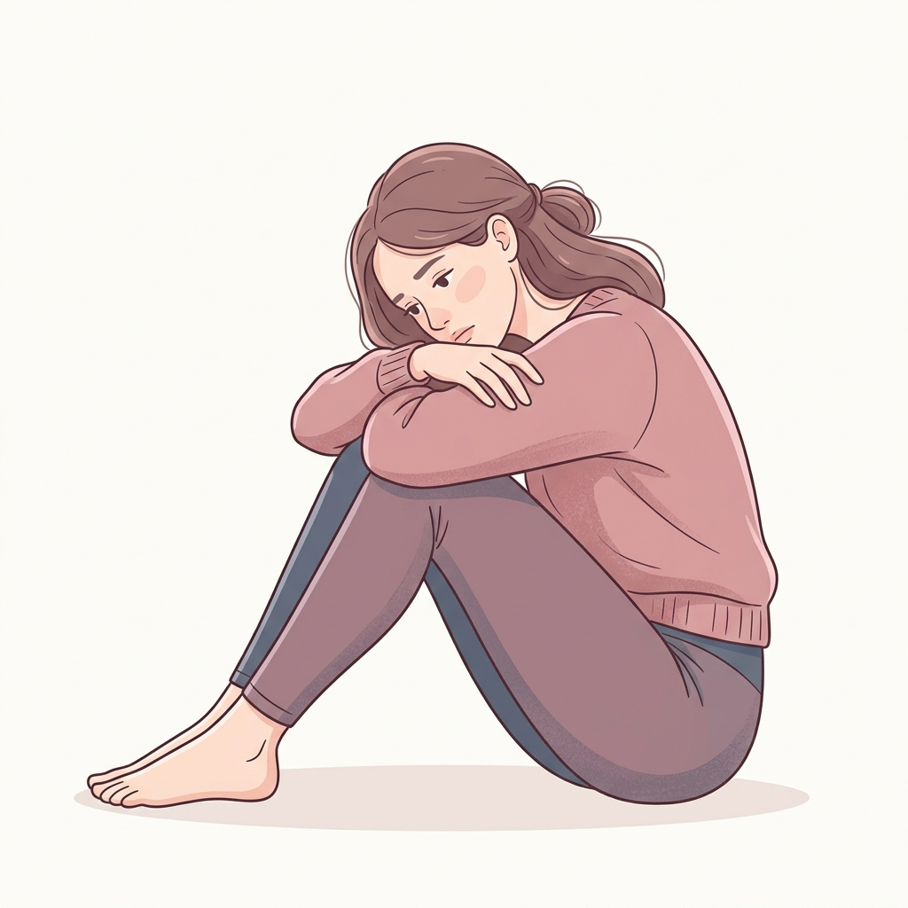

Información clara, cercana y confiable para comprender lo que sientes y saber que no estás sola en este proceso.

Es un trastorno del estado de ánimo que puede ocurrir después del embarazo, generalmente dentro del primer año después del parto. No es falta de amor ni debilidad. Es una condición real que tiene tratamiento y apoyo.
No es una señal de debilidad ni significa que una madre no quiera a su bebé. Es una condición real que tiene tratamiento y merece comprensión, apoyo y atención médica.
La depresión postparto no tiene una única causa, sino que se produce por la combinación de diversos factores biológicos, sociales y psicológicos:
Las variaciones hormonales drásticas después del parto pueden alterar la química cerebral y afectar el estado de ánimo.
El estrés acumulado, la ansiedad constante y los antecedentes familiares o personales de depresión.
Falta de apoyo de la pareja o red familiar, el aislamiento social o dificultades económicas y familiares.
La fatiga extrema, el cansancio crónico por la falta de sueño y la recuperación física del proceso de parto.

Es importante aprender a diferenciar el cansancio habitual de los síntomas persistentes que interfieren con la calidad de vida:
¿Tienes alguna duda sobre la depresión postparto? ¿Te gustaría compartir tu experiencia de forma segura? Puedes escribirnos. Nuestro objetivo es crear un espacio seguro de información, apoyo y acompañamiento.